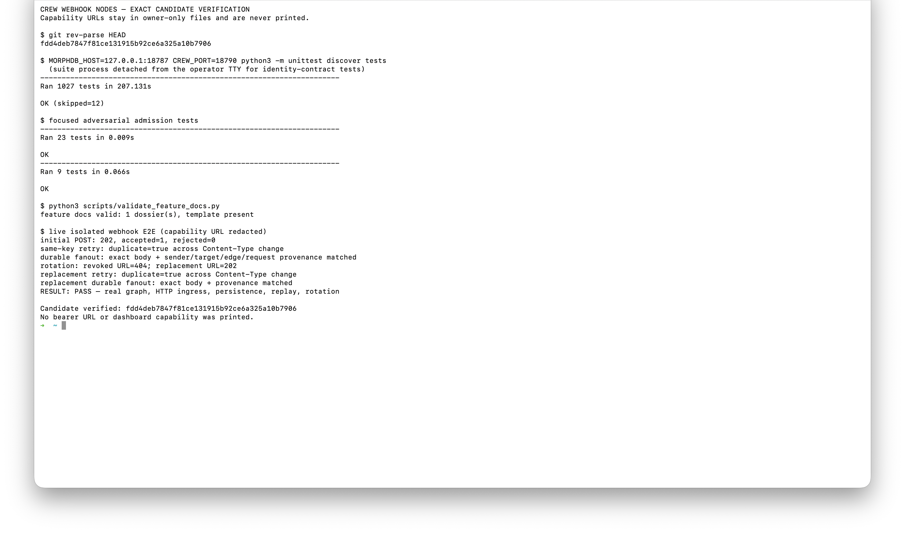

Create and configure
Select + Hook, give the node a name and optional deterministic template, then use its authenticated controls to edit, rotate, or delete it.
HTTP in. Durable Crew mail out.
Turn JSON, form, or text webhook payloads into durable messages for every connected agent.
Verified end to end at the recorded revisionThis feature provides loopback HTTP ingress inside the dashboard process. Managed public Internet exposure is deliberately a separate delivery slice.
01 · User flow
An authenticated operator creates a source-only hook, connects it to agents, and gives the capability URL to an external caller. A bounded request becomes ordinary durable Crew mail.
Select + Hook, give the node a name and optional deterministic template, then use its authenticated controls to edit, rotate, or delete it.
Draw one or more outgoing edges to agent nodes. Hooks cannot receive edges, connect to other hooks, or receive replies.
A caller sends JSON, form data, or UTF-8 text. Crew returns a bounded 202 result and connected agents receive durable messages with immutable hook, edge, target, and request provenance.
Node model, dashboard controls, safe payload templates, durable idempotent fan-out, existing mail-gate enforcement, and loopback HTTP ingress.
Managed tunneling, agent or Foreman management, executable request code, provider-specific signatures or IP policy, and synchronous waiting for an agent runtime.
02 · Architecture
The dashboard cookie and CSRF boundary owns configuration. The random capability authorizes only one hook's delivery lane. It grants no graph, terminal, or operator authority.
The capability is checked before the body is read, then resolved again before parsing and serialized dispatch. Receipt creation shares an admission lock with update, rotation, and deletion. A request that loses that race fails closed.
Parsing and templating finish before receipt creation. Every snapshotted target passes through the existing mail acceptance transaction, retaining edge authorization, rate and budget caps, transforms, FIFO order, and exact provenance.
03 · Public interface
Configuration stays authenticated. The public-style route does one thing: accept a bounded invocation for the hook identified by its unguessable URL capability.
POST /api/webhook/create {name, description, template}
POST /api/webhook/update {guid, description, template}
POST /api/webhook/rotate {guid}
POST /api/webhook/delete {guid}
GET /api/graph/snapshot → includes webhooksClicking a hook node exposes these controls in the operator dashboard.
POST /hooks/<capability>The body limit is 1 MiB with one decimal Content-Length. Transfer encoding is rejected.
Templates can read payload, raw, and lower-case non-credential headers. Authorization, cookie, proxy-credential, and Set-Cookie values are absent.
A blank template falls back to payload.message, then payload.text, then compact full-payload serialization.
A 202 may contain bounded accepted and rejected target counts. Rejections expose only safe identifiers, queue status, and a generic code.
Hooks use the existing agent object type with kind="webhook", keeping edge relations valid while runtime readers exclude them. Names remain unique across runtime agents and hooks.
webhook_delivery stores the receipt version, hook GUID, request ID, hashed idempotency key, payload hash, rendered message, exact edge/source/target snapshots, per-route results, and timestamps.
Per-edge request IDs reuse a durable transform result and rate reservation. Completed duplicates return before parsing; processing retries reuse the stored rendered message, so later template or header changes cannot reinterpret the invocation.
Rotation replaces the URL capability immediately. Deletion removes the hook and incident routes while preserving historical delivery receipts and messages.
CREW_WEBHOOK_PUBLIC_BASE_URL changes only the URL shown to the operator. It does not bind a public listener or create a tunnel.
04 · Security
The request surface is intentionally narrow, body-bounded, credential-blind, and fail-closed. Existing graph and mail invariants remain authoritative after admission.
Capabilities carry at least 256 random bits. Access logs are disabled. MorphDB lookup uses only a domain-separated SHA-256 value and constant-time verification of the raw stored capability, so the bearer never enters a backend query string.
Graph responses omit a standalone token; the capability appears only inside the operator-visible URL. The hook route cannot read graph state, open terminals, or perform operator actions.
Unknown and malformed paths in the reserved /hooks* namespace fail before their declared body can hold a request thread. Framing and the 1 MiB limit are checked before payload parsing.
Stored templates render text; they do not execute Python or JavaScript. Credential-bearing headers never enter their context, and idempotency keys are hashed before persistence.
Filesystem paths, internal URLs, exceptions, and durable diagnostics remain operator-only. Public results contain bounded identifiers and generic rejection codes.
Each target independently retains its edge authorization, identity snapshot, rate, token, cost, filter, and transform controls. A rejected route does not unwind already durable siblings.
| Failure | Caller sees | Recovery |
|---|---|---|
| Malformed JSON, invalid UTF-8, missing template field, or empty or oversized render | 422; no receipt or message |
Correct the payload or template, then retry. |
| No outgoing routes | 409; no message |
Connect at least one agent. |
| Unknown, deleted, or rotated capability | Generic 404 before body read |
Copy the current URL from the authenticated dashboard. |
| Same idempotency key and body | Original result with duplicate: true |
Treat it as success. |
| Same key with a different body | 409 |
Use the provider's correct delivery identifier. |
| One route violates a limit, transform, or identity invariant | 202 with a generic route rejection; other targets remain durable |
Repair the route and send a new invocation. |
| Template or headers change after receipt creation | Retry reuses the original rendered message | Use a new delivery identifier for a new interpretation. |
| Edge or endpoint identity changes after receipt creation | An unaccepted old route is rejected, never redirected; any exact durable row remains authoritative | Send a new invocation after topology is stable. |
| Process or storage fails after reserving work | Generic 503; receipt remains processing |
Retry with the same idempotency key so stable request IDs reconcile. |
| MorphDB unavailable | Generic 503 |
Restore storage and retry. |
| Invalid framing or oversized body | 400 or 413 before dispatch |
Send one valid bounded Content-Length. |
If a process crashes after a transform script runs but before its result row is stored, a retry can run that transform again. Transform-side external effects must therefore be idempotent.
05 · Rollout
The data model is additive and existing agent rows remain runtime agents. External reachability can be removed independently from stored hook configuration and delivery history.
Webhook rows are selected by kind; runtime-only readers keep excluding them. This slice serves /hooks/* only on Crew's loopback dashboard. If an operator supplies a reverse proxy, it must publish only the hook path, terminate TLS, and own provider signature or IP policy.
Feature delivery is intentionally sliced: webhook nodes provide the model and local handler; Foreman control adds bounded agent configuration; public ingress later places a dedicated hook-only gateway in front of the local runtime.
Unset CREW_WEBHOOK_PUBLIC_BASE_URL to return to relative loopback URLs. Stop proxying /hooks/* to remove external reachability. Delete a hook to remove live routes while retaining historical evidence.
Do not destructively roll back the additive schema.
06 · Verification
The digest binds this evidence-only dossier amendment to the declared implementation and test blobs at the tested candidate. Primary proof is the actual terminal capture; the real browser recording and graph image provide interaction context.
fdd4deb7847f81ce131915b92ce6a325a10b7906
258e7e894e79c53bdf7df291c2aa8996c4882d2291122872ee7546544b86f231
MORPHDB_HOST=127.0.0.1:18787 CREW_PORT=18790 python3 -m unittest discover testsRan 1027 tests in 207.131s; OK (skipped=12).
cd frontend && npm test -- --run && npm run build5 test files and 21 tests passed; the production build passed.
CREW_APP=crew-feature-hook-evidence-fdd4deb MORPHDB_HOST=127.0.0.1:18787 CREW_PORT=18788 ./bin/crew dashboard start; execute tests/browser/webhook-nodes.mdCreated a real agent, hook, and route; POST returned 202 with one durable message, the retry reused the receipt, and rotation made the old URL return 404 while the replacement returned 202.
python3 scripts/validate_feature_docs.pyFeature docs valid: 1 dossier, template present.


The isolated flow asserted: initial POST 202 with one accepted and zero rejected targets; same-key retry returned duplicate=true across a content-type change; durable body plus sender, target, edge, and request provenance matched; rotation made the revoked URL return 404 and its replacement return 202; replacement retry was also duplicate and its durable fan-out matched exactly.
Only synthetic fixtures were used: app crew-feature-hook-evidence-fdd4deb, hook test_fdd_hook_source, agent test_fdd_hook_target, and test home /tmp/crew_tests/test_fdd_hook_target. No customer or production data was used.
Webhook and dashboard capabilities lived only in owner-readable files and were omitted from commands, logs, media, and this dossier. A dashboard capability exposed during setup was invalidated immediately by restarting the isolated dashboard; its replacement remained redacted.
After capture, the browser and dashboard were stopped, the exact isolated MorphDB app was deleted, and the test home was moved to a recoverable task archive. Owner-only temporary bearer files were quarantined outside the repository.
An independent exact-revision review found no P0–P2 issues. Focused webhook, mail, graphstore, transform, dashboard security/process/API, CLI identity, graph identity, containment, feature-doc, browser-contract, and docs-contract suites passed before the full run.
The manifest is the machine-readable source of truth. The implementation spans the Crew runtime, schema and graph store, mail gate, dashboard API, graph UI, generated static bundle, project documentation, and repository readme.
Verification declares backend, frontend, integration, and real browser coverage. The complete path inventory is preserved below.